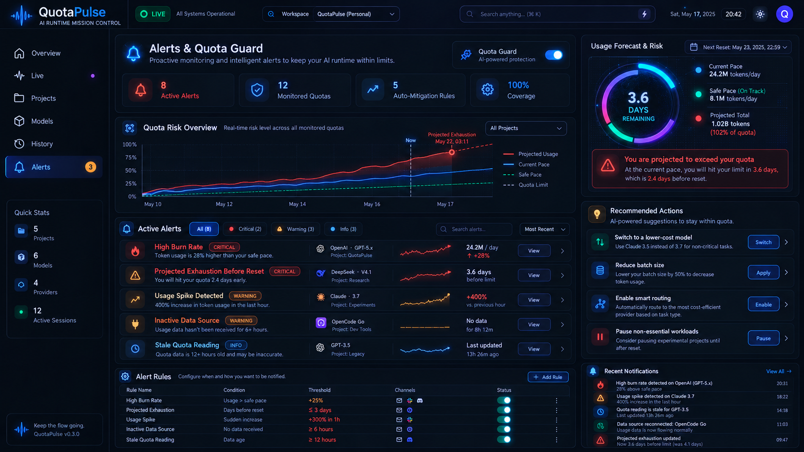
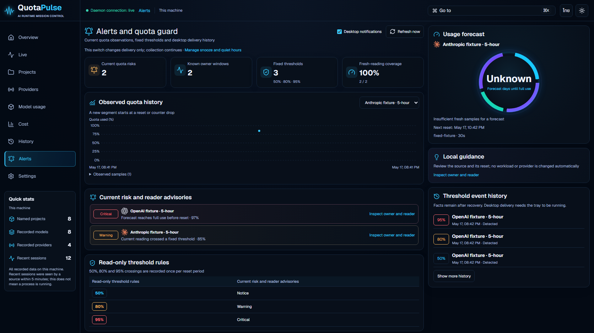

ภาพแอปใช้ข้อมูลทดสอบจาก daemon จริงในฐานข้อมูลจำลอง ตัวเลข ชื่อ และรูปกราฟจึงต่างจาก concept เครื่องมือนี้ช่วยตรวจหน้าตา ไม่มีคะแนนความเหมือนหรือการอนุมัติ visual acceptance
ภาพต้นฉบับถูกคัดลอกโดยตรวจ SHA256 ว่าตรงกับ refs ทุกไฟล์ ภาพแอปเป็น English/dark ที่ขนาดต้นฉบับ ไม่มีการตัดส่วนหรือปิดบังพื้นที่
Alerts: v1.43; History: v1.42; Cost: v1.41; Overview, Live, Projects, Providers, Models: v1.40. Only Alerts was changed and captured in this checkpoint.

